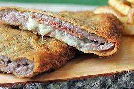

Cachopo asturiano

Description
Cachopo, a really tasty Asturian dish, made of beef, ham and cheesee, the
MAGIC mix. "Don Cachopo" is one of the most common dishes there
in Asturias, along with the best fabada asturiana or the loved rice with
milk as the crowned dessert. If you ever been there, you know that size
matters, who is the crazy person who dislikes a giant cachopo?
I don't know, probably someone with a several unhappy life
Today we'll learn how to make this delicious food in a few steps, and a
really short amount of time. Do you need to stay coding for 12 hours but
you need to eat something? Make some
CACHOPO ASTURIANO and everything will be better in your
life (and your code)
Ingredients
-
4 beef steaks, cut like an open book, so we can put anything u want
inside( ham in this case)
- 4 steaks of york ham
- Cheesee, nobody cares which one, but pick one
- salt (as you like)
- 100g of flour
- 2 eggs and 200g of bread crumbs
- soft extra virgin olive oil
You can add some fried potatoes (not chips, something like bravas) and
some piquillo peppers
Steps
Go running, make some exercise, walk for 78 hours straight, but make sure
that you are hungry or you wont finish the dish! Let's cook
-
Prepare the flour, the bread crumbs and the 2 eggs mixed in separated
plates
-
We're gonna smash the meat, yes you read well, grab any contundent
object you have in the kitchen and smash the beef steaks
- Once smashed, extend it and then add salt as you like
- Put the ham and the cheesse in top of the extended steak
-
You can add an open fried piquillo pepper if you want to( i recommend
it)
- Add as many layers of ham and cheesse as you want
-
Take the other smashed steak and close the "Sandwich" you just made
-
coat the steak in flour, then egg and last, the bread crumps, you can do
this process 1 or 2 times for a thicker batter( i don't recommend it)
-
Once you have all the cachopos you want ready, start heating som oil in
the pan for frying, mid fire, so the oil isn't too hot
-
Cook around 3 minutes for each side, searching a golden colour, so
everything is cooked inside
-
Put some paper in top of a plate, so when you retire the cachopos, it
will absorb the excess of oil
-
Wait until the're a little bit colder!!! You're gonna burn your thonge
- Ready, you have your cachopos!